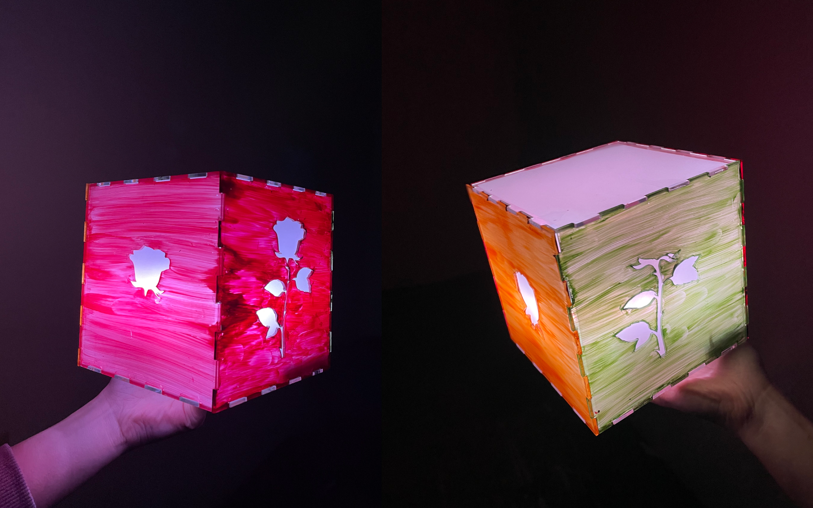
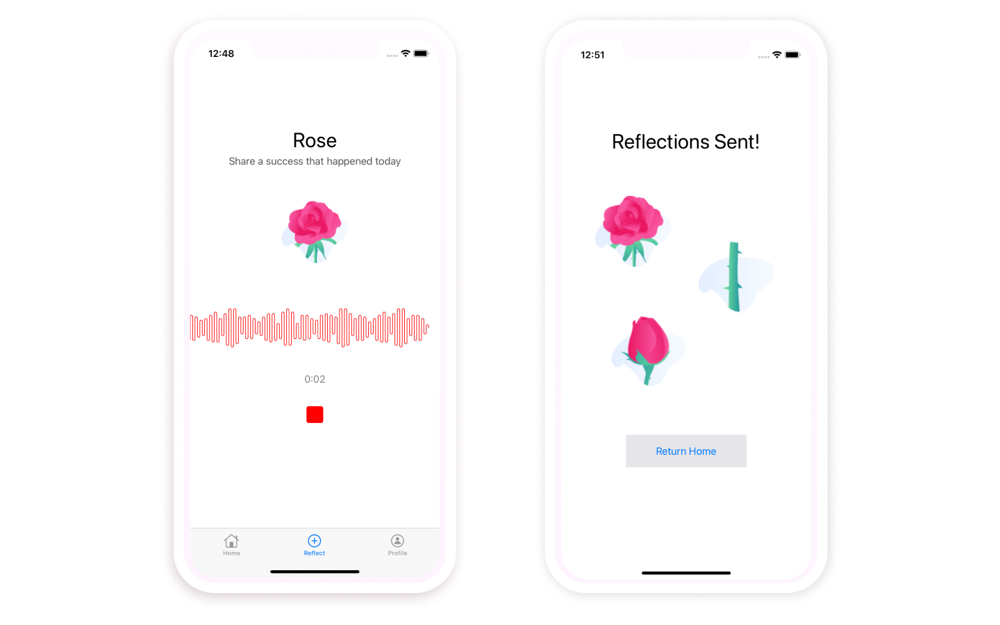
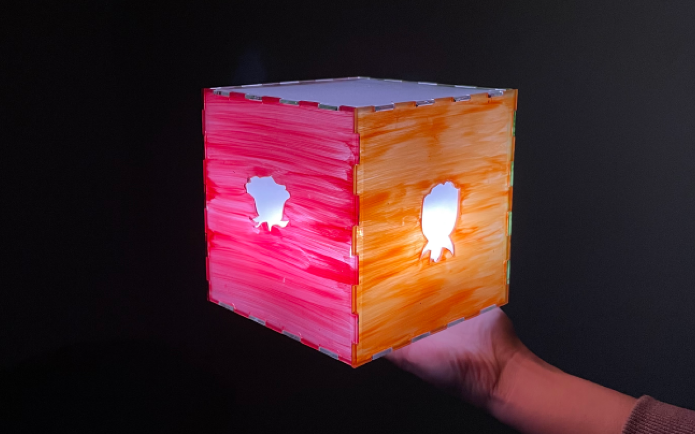
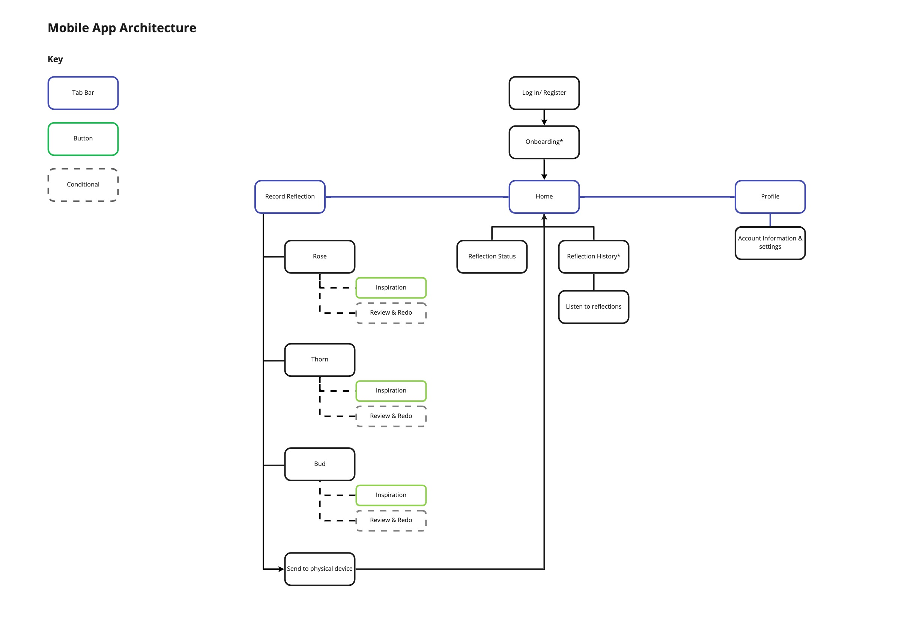
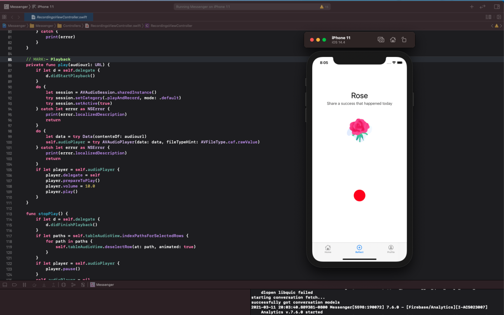
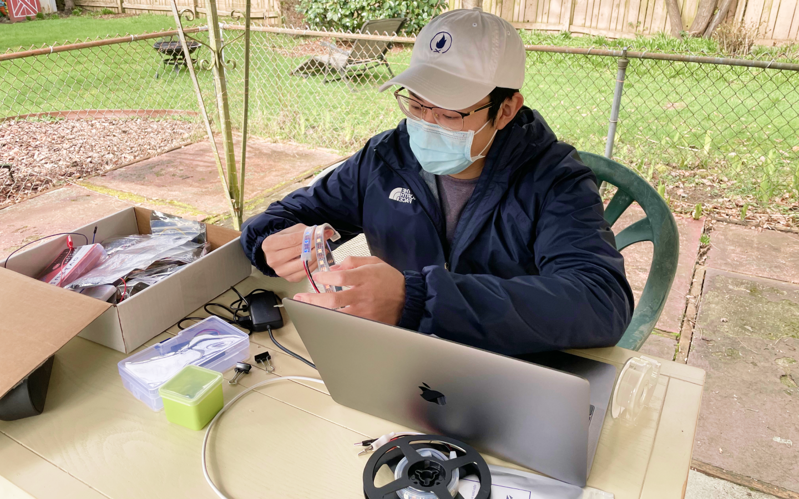
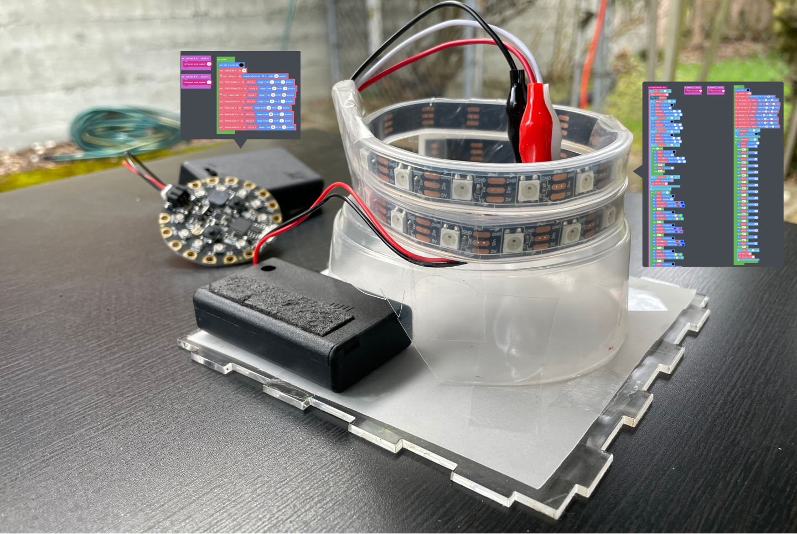

Flora
Ryan Untalan
Mar. 12, 2021 · 3 min
Overview
Project Description: Flora is an interactive reflection cube that brings parents and children together for a daily bedtime connection ritual, even when they can’t be together in real-time or space.
Role: Interaction Designer and Prototyper
Tools: Figma, Miro, Swift, MakeCode, Participatory Design, Wizard of Oz Prototyping, Usability Testing
Time Duration: 10 weeks
Project Context
During a historical era of pandemic-imposed isolation, we have all faced longing for our friends and family—and a need to feel connected, particularly to those people who are geographically distributed. My team and I were inspired to explore ways of mediating intimate connections via interactive technology.
Problem Space
Our team focused on the problem space of regular separation between parents and children. Here are our 4 key insights:
- Many parents and children live with the challenge of regular separation.
- The bedtime routine and parental presence is an important and intimate part of a child’s day.
- Working parents are not always able to connect synchronously.
- Sharing self-reflections strengthen connections.
Design Challenge
How might we facilitate asynchronous connections during bedtime between a child and a parent who is away from home?
Design Response

Flora is an interactive reflection cube that brings parents and children together for a daily bedtime connection ritual, even when they can’t be together in real-time or space.

Flora comes with a companion mobile app that allows parents to record and share their reflections with their child anywhere in the world.

Flora helps facilitate structured daily reflections at bedtime using the Rose, Thorn, Bud analogy. Rose being the highlight of your day, Thorn being a challenge of your day, and a bud being something you look forward to.
Flora Prototype Video
My Role

Created the Flora mobile app information architecture

Built the Flora mobile app using Swift and Firebase

Led the interaction design for the Flora Cube

Prototyped the light interactions using MakeCode
Reflection
Prototyping. I spent a weekend watching Swift tutorials to learn how to make a working iOS app for our project. I also built the light source for the Flora cube with no prior experience in physical computing. Making Flora helped me grow in my prototyping skills and challenged me to think critically about interaction flows and how to implement them.
Design tradeoffs and constraints. One major challenge we faced as a team was figuring out how to bring our ideas to life, given the limited resources and timeframe. It required a lot of discussing, delegating, and self-teaching. We relied on each other's strengths and ended up creating a product we're all proud of.
Thank you for reading!